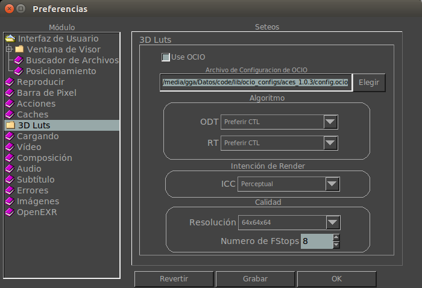

|  |
DisplayCuando esta opción está activa y hay un archivo de configuración de ocio (config.ocio), la colorimetría estará a cargo de OpenColorIO (OCIO). Un nuevo menú aparecerá en . Cuando está desactivado, el algoritmo a utilizar será CTL o ICC, seteado aqui mas abajo. Este archivo es el principal control de OpenColorIO. Usará el seteo de la variable de entorno OCIO. Si no está seteada tomará el valor establecido en las preferencias. Este botón le permite elegir un archivo de configuración de ocio (config.ocio) del disco. te permite configurar si el LUT preferirá CTL o ICC. Esta sección te permite cambiar la Intencion de Rendering para perfiles ICC. Este seteo especifica la resolución del Lut 3D. Seteos mas altos son más precisos pero su tarjeta gráfica puede que no lo soporte. El Número de Fstops controla cuantos fstops cubrirá la table de 3d (3d Lut). Si necesita más detalles en los niveles de negro, éste es el seteo a incrementar. Nótese que mientras los niveles de negro mejoran en calidad, los tonos medianos disminuyen. Use este seteo junto a la Resolución para mayor control. |